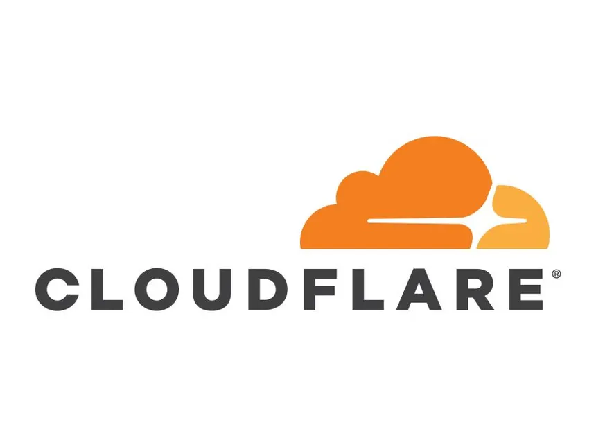
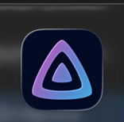
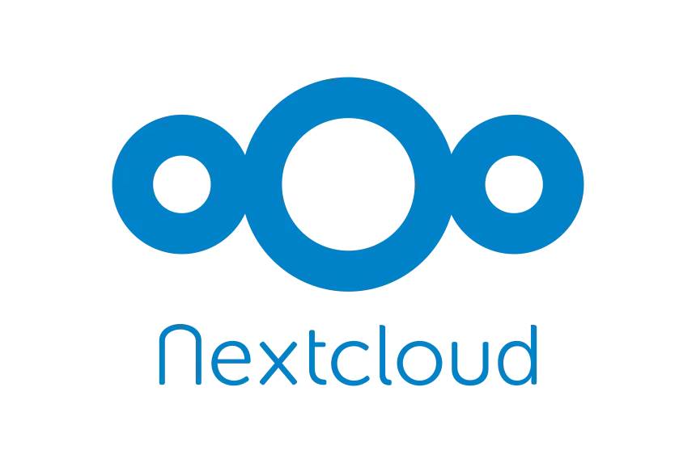

Cloudflare-setup
2025-12-17 last updated
Context
I was in the search of a way on how to access my home lab remotely. Also,
this was before I learned about Tailscale, how to port forward(definitely will note how to port forward)
and this suited the job. Along with having a cool domain name to access my home labs
Goal
- remote access to home server, without having to port forward.
- Wanted cool name for when I tell people about a homelab projects.
- cool name for ease of search.
Disclaimer
domain name required
Steps I Took
- Starting from the web ui dashboard, select the three lines in the top left corner then select apps.
- Go to discover apps->search ‘Cloudflare’ at the top->install.
- Before we can install we need the token key from cloudflare.
- sign in or create an account.
- You'll need to onboard a domain name, the "+ add domain" button from the account home page.
- .
Issues & Gotchas
- Make sure BIOS/UEFI boot mode is consistent (UEFI for both Windows and Ubuntu).
-
If the bootloader breaks, boot from a live USB and repair GRUB (for example
with
boot-repair or chroot + reinstalling GRUB).
Notes for Next Time
Export a list of critical Windows apps before starting. Keep a small
USB handy with drivers and tools in case networking doesn’t work right
away on Ubuntu or Windows after changes.

Jellyfin-setup
2025-12-17 last updated
Context
During my homelab research, I seen lots of people installing Jellyfin as their media server.
Also, a coworker of mine heard me mention Jellyfin and got his setup before me which was my
my breaking point to install it. I wanted a way to stream my own media.
Goal
- Would like old and new movies.
- Childhood shows(mandadtory).
- Would like to listen to music as well.
- Remote access to the server.
Steps I Took
Creating SMB(Server Message Block/Network drive)
- Starting from the web ui dashboard, select the three lines in
the top left corner, then select datasets.
- Double-click the dataset/pool you would like to add to and select add dataset.
- name the dataset(i.e. jellypool), change the Dataset Preset to Apps, change the name
of the smb(i.e.jellypoolsmb) and save. Also, save the name of the smb somewhere or write it down.
Creating a User for the App to access the SMB
- Select the three lines in the top left corner then select creditials, then groups.
- select add in the top right, name the group(i.e.jelyfingroup) and save.
- select the three lines in the top left corner, creditials and select users.
- select Add in the top right corner, name the user(i.e. jellyuser),
SMB access should already be selected, but if not check that box.
- Create a password. Save the name and password, this will be how jellyfin accesses the SMB.
- change Groups, scroll to the jellyfingroup and select.
- Change Home Directory to the jellysmb and save.
Installing Jellyfin
- Select the three lines in the top left corner, Apps,
Discover Apps, search Jellyfin, select and install.
- I left most of the settings alone uptil Aditional Storage. Select Add.
- This next part I messed up on so many times so please just stick to the script.
Change Type to SMB/CIFS Share, Mount Path is /mnt/nameofdataset/nameofsmb. example: /mnt/jellypool/jellypoolsmb
- step
- step
- step
- step
- step
- step
- step
- step
- step
- step
Issues & Gotchas
Notes for Next Time
insert

nextcloud-setup
2025-12-28 last updated
Context
I was searching for a self-hosted app similar to the way Onedrive function
because I admir the application's functionality.
Goal
- edit text.
- edit text.
- edit text.
Steps
- insert
- insert
- insert
- insert
Things I like and dislike
Things I like
- I enjoy the web ui of the app
- The ease of installment
Things I dislike